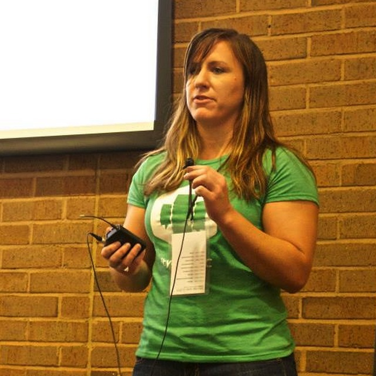

Resources
- Github.com
- Hackshop.waffle.io
- Lean Canvas (Provided to teams)

Event Information
Join us for the first ever Hackshop-- part hackathon, part lean workshop. This 2 day event will focus on building apps and businesses using open data. Data experts from Census and CitySDK will be on site to help identify relevant data sets that can help inform the best way to build your app or business. While teams work to deliver a Minimum Viable Product/prototype, they will have the unique opportunity to interact with mentors and advisors from the community to get early feedback.
Throughout the course of the event, teams will be guided through a lightweight framework guided by Hackshop organizers that instills principles of running lean and maximizing limited resources using elements of agile and lean startup principles. Teams will learn best practices for delivering a product from idea to prototype in less than 24 hours.
Teams can come prepared with their current projects or as individuals looking to pair up with others to tackle hard problems.
Sound interesting? Head over to Eventbrite to save your spot!
Speakers/Mentors
Jeff MeiselU.S. Census Bureau & CitySDK Presidential Innovation Fellow |

Ashley McClellandWaffle.io / CA Technologies Product & Customer Development |
Kelly KarresU.S. Census Bureau Data Dissemination Specialist |
Ryan DolanU.S. Census Bureau Data Dissemination Specialist |
Bobby JonesUSDA Sr. Advisor, Deputy CIO for Policy and Planning and Acting Chief Data Officer |
Andrew HomeyerWaffle.io / CA Technologies Engineer & Intrapreneur |
Schedule
Friday, September 11
- 6:00 pm - Welcome Dinner & Networking
- 6:15 pm - Introductions to Event Organizers and Data Experts
- 6:30 pm - What's Possible with Census Data? with Kelly Karres and Ryan Dolan, Data Dissemination Specialists at U.S. Census Bureau
- 6:45 pm - What's possible with CitySDK with Jeff Meisel, Presidential Innovation Fellow
- 7:00 pm - Problem Pitching - What Problem do you want to Solve?
- 7:30 pm - Team Formation
- 8:00 pm - Getting Started with Waffle & GitHub
- 8:30 pm - Lean Canvas & Hackshop introduction
- 9:00 pm - Practice - Team Sprint 1 (Customer/Problem/Promise)
- 9:45 pm - What Data will You Need? w/ Kelly & Ryan
Saturday, September 12
- 8:30 am - Breakfast, Lean Canvas Review & Data Check In's
- 9:00 am - Team Sprint 2 (problem/solution) (1 hr)
- 10:00 am - Mentoring & Feedback Panel
- 11:00 am - Hackshop: Pivot/Perservere
- 11:30 am - Team Sprint 3 (pivot/perservere) (1 hr)
- 12:00 pm - Hackshop Lunch & Learn: Running Experiments Towards MVP
- 12:30 pm - Data Check In with Kelly & Ryan
- 1:00 pm - Team Sprint 4 (build/test)
- 2:30 pm - How to Pitch with Andrew
- 2:30 pm - Team Sprint 5 (pitch building)
- 3:30 pm - Pitches Begin
- 4:00 pm - Judging & Prizes